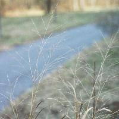
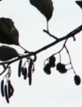
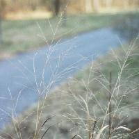
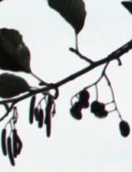

Saturday, December 13, 2003
Old Lace
  
  In the center of the round, white blossom -- the compound umbel -- of Queen Anne's Lace is a single, tiny red/purple flower. Though small, it's shocking as a bloodstain, or bright red lipstick on a pale face. It's all very sexual: the lace is bridal and the red blossom nothing short of a deflowering. And, as they senesce, the blossoms involute, curl up, introvert. They become gray/brown, dry, spare, frail. The incurling rays are still astonishingly beautiful.
What drew me to the weed that, for lack of identification, I've had to call "the beautiful nameless grass" was both its macroscopic elegance -- it's chest high, with long, arced, graceful blades, and a flame-shaped, open airy seedhead -- and the shocking extravagance of its seeds. They're tiny, maybe 3 mm, and relatively sparsely arrayed on each spikelet. Late summer, each seed bore tiny feathery tongues of the most extravagant mauve and orange -- appendages that seemed more suited to orchis or lepidoptera that to a Northern riverside weed. They reminded me of feather boas -- sexual, seductive, alluring. As auntumn deepened, of course, the seeds lost their fantastic antennae, the grass turned dry and brown. But still, the seedhead kept its flame shape: abstracted, platonic.
One of my river photos was of tree branches against sky: the branches were mostly bare, but still bore a few round leaves, and two kinds of pods: long ones and round ones. These were easy to find in the tree book: it's an alder, and the pods are male and female catkins. The long ones, Freudianly enough, are male, and the round ones female.
Beautiful, extravagant, sexual nature.
I've found it not comforting, exactly, but somehow appropriate, to have had this several month bout of retreat and broken-ness be in autumn. I am decades past my deflowering; I grow smaller, dryer, more abstract; I am going to seed in a decidedly unbotanical way, dispersing, and my elements will persist utterly changed, distributed, incorporated. I think of the eons that preceeded my birth; I think of the eons that will follow my death. I think of the moment of creation, the big bang, when everything that is was together, all of us. I try to envision something enormous enough to include all that, some compassion, some God-is-Love: and, at that final extra step, that leap of faith, that moment of appeal, I fail. I can't say it. Can't say "This is God," or "I believe in God." Can't posit a deific object separate from everything, separate from me, from you, from the river, from the beautiful grass, from my eye that sees it, from my mind that wants so much to know its name.
But maybe it's just a word, after all. Maybe it's best kept nameless. Maybe, if I had found the grass in my field guide, I might have stuck it in an easy category -- oh, that's just witchgrass, johnsongrass, sorghum -- and missed the wild and generous detail of its appearance and evolution.
There's even more at risk in naming God.
Thursday, December 11, 2003
Changing State

CHANGING STATE
The ice forms first at the riverbank
where the water is still and shallow.
There it begins its marginal life
honing the secret edge
that inches toward the main channel molecule by molecule
progressing regressing
which is called changing state
Against the brown water
the new ice is clean, almost white.
Willow leaves blanket the shore
up to a collar of bare mud,
then, under the ice, less distinct,
they blanket the river bottom.
they are narrow as penstrokes
they translate themselves
Downstream, half hidden behind a thicket,
there’s a tent and tarp,
an old bike, a plastic water jug, a half
buried sneaker, a rusty lawn chair.
Massive, uniform, smooth,
the water pushes east.
It reflects the bare trees.
I would like to say three things about the river.
Between water and ice is the longest night.
All movement is fall.
The rest is ditch.
No Vacancy
In my dream I was parked on a bridge on Commonwealth Ave near Boston University, looking West down a broad, empty boulevard toward a mid-sized office tower. It was a dream version of Commonwealth Ave and B.U. -- both them and not-them as only a dream can be.
I was on a cell phone giving someone directions to my Aunt Sofie's summer house, a wonderful little cabin on a pond where I spent childhood summers, that's long given way to someone's pricey McMansion in the woods. In my dream I was to meet someone there, and I was full of delight at the thought.
Suddenly, a puff of smoke emerged from the office tower, then another, and another, and I realized with mounting horror that it would soon collapse in a 9-11 like disaster. All the street lights and building lights went out. I leaped from my car and tried to find our apartment, which, in my dream, was also on Comm. Ave. I couldn't find it. I didn't remember where I lived. I was lost, running down endless streets, University corridors, and scaffolding-covered sidewalks. No one could tell me what had happened.
At the beginning of one of my very early journals, college probably, I copied an epigraph out of Henry Miller, something to the effect that the greatest joy is to be lost in an unfamilar city. I took it to mean plunged into the new and strange, adventuring, even to be seeing things with fresh eyes or beginner's mind. I've had dreams in which I am in a new city, or a new house, exploring: pleasant, liberating, exhiliarating dreams.
Last night's dream was the antithesis of that. I was lost in a familiar city, in a city of my own making, in a thicket of my own construction. There was a reaching toward an idyllic past; there was dislocation and disorientation in the present; there was an intrusion of great menace. There was, of course, dread: which is always a gaze toward the future.
The familiar becoming unfamiliar, in my dream, was a horror. An unmooring. A loss of place, a threatened loss of self. An expansion upon the chill we fifty-somethings feel when we can't retrieve a name or word, or take a little longer finding the car in the parking lot. With death brooding over it all, inevitable. With social menace compounding garden variety mortality and pain. This was not seeing with "beginners eyes" -- seeing the familiar as if new, shorn of layers of concept and judgment. This was dissolution, psychosis, dementia.
This morning, as I made my third cup of coffee, the word "vacant" occured to me.
I sat yesterday for the first time in a while, eschewing the zafu for my desk chair, and was vacant for the better part of thirty minutes. Vacancy is nothing like emptiness. It's an amalgam of dullness, blankness, sleepiness and mental detritus. It's white noise, test pattern, electronic TV snow. It's akin to treading water, killing time, daydreaming, muddle.
I was refusing to heed the centuries of wisdom that have gone into prescribing meditation posture. There's nothing inherently mystical about how a straight spine fosters alertness. I couldn't do even quarter lotus to save my life, but even Burmese position gives a taste of the tripod stability of butt on the cushion, knees on the floor. Even the cosmic mudra -- its loveliness aside -- is sort of a strain gauge, a monitor of one's tension or laxity. I learned to meditate with eyes shut, but I think the zen prescription of eyes half open and unfocused also strengthens alertness.
I read last night's dream, among other things, as an admonition: wake up. Not so much from the literal dream, but from the waking dream. The dream that wants to hold on to what is gone. The dream that's desparate to cling to the construct of the self and its sense of solidity, discreteness, invulnerability and immortality. The dream that denies the truth of illness, pain and death, of bodily and mental dissolution. The dream that frets and frets about the same thing.
"No room at the inn" is certainly a byword of this season. In my own case, as soon as there is no vacancy, there will be room for emptiness.
I was on a cell phone giving someone directions to my Aunt Sofie's summer house, a wonderful little cabin on a pond where I spent childhood summers, that's long given way to someone's pricey McMansion in the woods. In my dream I was to meet someone there, and I was full of delight at the thought.
Suddenly, a puff of smoke emerged from the office tower, then another, and another, and I realized with mounting horror that it would soon collapse in a 9-11 like disaster. All the street lights and building lights went out. I leaped from my car and tried to find our apartment, which, in my dream, was also on Comm. Ave. I couldn't find it. I didn't remember where I lived. I was lost, running down endless streets, University corridors, and scaffolding-covered sidewalks. No one could tell me what had happened.
At the beginning of one of my very early journals, college probably, I copied an epigraph out of Henry Miller, something to the effect that the greatest joy is to be lost in an unfamilar city. I took it to mean plunged into the new and strange, adventuring, even to be seeing things with fresh eyes or beginner's mind. I've had dreams in which I am in a new city, or a new house, exploring: pleasant, liberating, exhiliarating dreams.
Last night's dream was the antithesis of that. I was lost in a familiar city, in a city of my own making, in a thicket of my own construction. There was a reaching toward an idyllic past; there was dislocation and disorientation in the present; there was an intrusion of great menace. There was, of course, dread: which is always a gaze toward the future.
The familiar becoming unfamiliar, in my dream, was a horror. An unmooring. A loss of place, a threatened loss of self. An expansion upon the chill we fifty-somethings feel when we can't retrieve a name or word, or take a little longer finding the car in the parking lot. With death brooding over it all, inevitable. With social menace compounding garden variety mortality and pain. This was not seeing with "beginners eyes" -- seeing the familiar as if new, shorn of layers of concept and judgment. This was dissolution, psychosis, dementia.
This morning, as I made my third cup of coffee, the word "vacant" occured to me.
I sat yesterday for the first time in a while, eschewing the zafu for my desk chair, and was vacant for the better part of thirty minutes. Vacancy is nothing like emptiness. It's an amalgam of dullness, blankness, sleepiness and mental detritus. It's white noise, test pattern, electronic TV snow. It's akin to treading water, killing time, daydreaming, muddle.
I was refusing to heed the centuries of wisdom that have gone into prescribing meditation posture. There's nothing inherently mystical about how a straight spine fosters alertness. I couldn't do even quarter lotus to save my life, but even Burmese position gives a taste of the tripod stability of butt on the cushion, knees on the floor. Even the cosmic mudra -- its loveliness aside -- is sort of a strain gauge, a monitor of one's tension or laxity. I learned to meditate with eyes shut, but I think the zen prescription of eyes half open and unfocused also strengthens alertness.
I read last night's dream, among other things, as an admonition: wake up. Not so much from the literal dream, but from the waking dream. The dream that wants to hold on to what is gone. The dream that's desparate to cling to the construct of the self and its sense of solidity, discreteness, invulnerability and immortality. The dream that denies the truth of illness, pain and death, of bodily and mental dissolution. The dream that frets and frets about the same thing.
"No room at the inn" is certainly a byword of this season. In my own case, as soon as there is no vacancy, there will be room for emptiness.
Tuesday, December 09, 2003
Seven for Three
Tomorrow's the anniversary of Thomas Merton's death.
This is a poem I wrote last February, taking liberties with the sestina form: I used the traditional "seven last words of Christ" as end words, repeating six of them in the traditional sestina manner, and having "spirit" drop from the first to the seventh line through the succesive stanzas. The envoi repeats the first stanza's pattern, and ends with "spirit."
"MC" was a young acquaintance who died of an overdose of heroin.
Seven Words for Three
(MC, Thomas Merton, Simone Weil)
His desert: neither water nor spirit.
If we could enter it would we forgive
his poppies’ milk, his secret paradise,
the exile where his father and his mother,
must wander now forever and forsaken?
Blessed -- marked by blood -- are those who thirst.
The key turns in its hole, and all is finished.
Mourning is blessed, too. It’s never finished.
The spring bestirs itself, like a raw spirit.
For what I didn’t see I can’t forgive
myself: I didn’t see he’d die of thirst
outside the gate of my fake paradise.
Bells ring from vernal pools. For sons forsaken,
two syllables of absence. Mother. Mother.
***
Matter corrupts. The Church shall be my mother.
Adieu seven deadly sins, with you I’ve finished.
The triple crown of Father, Son and Spirit
surpasses everything that I’ve forsaken.
Hours follow, psalm by psalm. O God forgive .
I’m restless in my souring paradise:
dull men, a rigid Abbot. I write, and thirst
for God in solitude and rain. Then thirst
for emptiness, O wordless Eastern mother
where Buddha’s smile exploded paradise.
Compassion, emptiness flooded his spirit,
then Bangkok and a broken fan finished
extinction’s job. There’s no one to forgive.
The world is accident. But not forsaken.
***
She wanted more than just to be forsaken.
She’d licked baptism, migraines, hunger, thirst,
and factory work, but still could not forgive
herself the lamb chop that her worried mother
had planted in her larder. Graceful spirit,
what hunger left behind, bacilli finished.
She’d craved a different, better paradise:
craved penal suffering, Cross, a paradise
of Church-and-State-decreed, and God-forsaken
affliction. But common martyrdom finished
her off -- war, scruples, faith, unanswered thirst.
She slipped away so quietly her mother
didn’t know she’d left. Elusive spirit,
you almost got it right. I can forgive.
***
The Word hung nailed and bleeding. Said, Forgive.
Obscene, it augured up a Paradise.
Spat blood, felt pity. Gave away its Mother.
Recited text: blah blah blah blah Forsaken.
A tingling in the throat. Must be the Thirst.
The dim hills lighten, lovely, O, I’m Finished.
Outbreath between the fingers. Whither Spirit ?
This is a poem I wrote last February, taking liberties with the sestina form: I used the traditional "seven last words of Christ" as end words, repeating six of them in the traditional sestina manner, and having "spirit" drop from the first to the seventh line through the succesive stanzas. The envoi repeats the first stanza's pattern, and ends with "spirit."
"MC" was a young acquaintance who died of an overdose of heroin.
Seven Words for Three
(MC, Thomas Merton, Simone Weil)
His desert: neither water nor spirit.
If we could enter it would we forgive
his poppies’ milk, his secret paradise,
the exile where his father and his mother,
must wander now forever and forsaken?
Blessed -- marked by blood -- are those who thirst.
The key turns in its hole, and all is finished.
Mourning is blessed, too. It’s never finished.
The spring bestirs itself, like a raw spirit.
For what I didn’t see I can’t forgive
myself: I didn’t see he’d die of thirst
outside the gate of my fake paradise.
Bells ring from vernal pools. For sons forsaken,
two syllables of absence. Mother. Mother.
***
Matter corrupts. The Church shall be my mother.
Adieu seven deadly sins, with you I’ve finished.
The triple crown of Father, Son and Spirit
surpasses everything that I’ve forsaken.
Hours follow, psalm by psalm. O God forgive .
I’m restless in my souring paradise:
dull men, a rigid Abbot. I write, and thirst
for God in solitude and rain. Then thirst
for emptiness, O wordless Eastern mother
where Buddha’s smile exploded paradise.
Compassion, emptiness flooded his spirit,
then Bangkok and a broken fan finished
extinction’s job. There’s no one to forgive.
The world is accident. But not forsaken.
***
She wanted more than just to be forsaken.
She’d licked baptism, migraines, hunger, thirst,
and factory work, but still could not forgive
herself the lamb chop that her worried mother
had planted in her larder. Graceful spirit,
what hunger left behind, bacilli finished.
She’d craved a different, better paradise:
craved penal suffering, Cross, a paradise
of Church-and-State-decreed, and God-forsaken
affliction. But common martyrdom finished
her off -- war, scruples, faith, unanswered thirst.
She slipped away so quietly her mother
didn’t know she’d left. Elusive spirit,
you almost got it right. I can forgive.
***
The Word hung nailed and bleeding. Said, Forgive.
Obscene, it augured up a Paradise.
Spat blood, felt pity. Gave away its Mother.
Recited text: blah blah blah blah Forsaken.
A tingling in the throat. Must be the Thirst.
The dim hills lighten, lovely, O, I’m Finished.
Outbreath between the fingers. Whither Spirit ?
Monday, December 08, 2003
On Quitting
Anticipating a long wait, I brought a book to my last xray and doctor appointments. As I had to walk a quarter mile from the Brigham to the doctor's office carrying a hefty packet of CTs and MRIs, my criteria was that the book be small enough to fit in my coat pocket. I grabbed a ancient paperback edition of Bruno Schulz' The Street of Crocodiles from my bookshelf, one I had bought in Chicago 25 years ago.
Later, when I opened it in the waiting room, a piece of yellowed paper fell out -- a bus ticket receipt: Trombly Motor Coach, Boston to Andover, 9 06 78. I stared at it in wonder. It didn't take me long to figure out where I'd been and where I was going on that day.
Today, looking at the receipt, I note the slogan: "Where you go is your business. How you go is our business." There's a slightly disreputable, complicit ring to that slogan, as if the company were perfectly content to ferry murderers to their victims or safecrackers to the bank vault -- as long as they were kept blissfully ignorant. Don't ask, don't tell.
So what was my business on September 6, 1978 ?
It was disreputable.
I was escaping. On the lam.
I've noticed that, twice, someone has found my blog via a google search on "quitting residency." I felt a pang of absolute empathy for what I imagine to be a miserably unhappy resident or intern, contemplating the unthinkable. Mon semblable, mon frere. Or ma soeur, as the case may be.
I began a residency in psychiatry in Chicago in 1978. It was a disastrously wrongheaded, ill-thought-out, neurotically fucked-up move on my part. Totally gonzo. Off the charts. If I had set out to make a bad choice -- medical school -- worse, I could not have picked a better method. I wasn't crazy about medicine. I'd hated internship. Psychiatry seemed a lot like poetry and literature. So I'd seek asylum there. I'd forgotten about one small thing: psych patients.
I could not have been more unhappy. I was, to start with, extremely homesick. This was compounded by the fact that, instead of beginning at the University with my fellow residents, I was sent across town -- to the old slaughterhouse district, I swear -- to a grim joint called ISPI, a heavily research-oriented state hospital, the Illinois State Psychiatric Institution. So I had no chance to bond with my fellow residents -- a task that, even under the best of circumstances for this shy recluse, would have been difficult.
There was a relationship, too. There's always a relationship. It came apart and came together several times over the two months I was in Chicago. The fella back home came to the windy city several times. I sent him away and resummoned him several times. And eventually married him, had a child with him, and divorced him but that's another story.
Last, and worst, there was night call. Which meant being the first doctor summoned to the ER when a psych emergency arrived. I felt utterly unsupported and unprepared. I didn't know the staff on the psych ward where I'd be admitting patients. I barely knew where the ward itself was. I'd done a year of internship, and could handle post op fevers and congestive heart failure, but psych was a whole new gig.
Like any new resident, I was green. Probably greener than most. Virtually clueless. I vividly remember consulting the neurology service one night on a patient who was probably catatonic. The resident who responded was peremptory, scornful and abusive. This was not, he lectured, a neurological case. It was clearly psychiatric. How stupid could I possibly be ? I can still feel the sting of it to this day. A teaching hospital at its best.
The other ER patient I vividly remember was more colorful. Literally. She wore a purple feather boa, honest, and shiny silver stockings. She clung to the arm of the (male) ER resident, fawning crazily and seductively over him, and glared at me with undisguised hatred and hostility. (My over-fed mind whirred: Borderline personality disorder. Often histrionic. Engages in splitting of the world into good and bad. Lack of fusion of the internalized imagos of good and bad mothers. Often characterized by self-mutilation and suicide gestures.) OK, fine. But now what ?

Fortunately for me, while I was spinning my Freudian psychodynamic wheels, she eloped from the ER. I prayed she would not return. Great case, eh ?
There was another sharp-tongued, young, long-term patient on the ISPI chronic ward, who also instantly had me pegged (my deer in the headlights demeanour was not subtle) as an easy mark. I remember her acid ridicule of my "little flat shoes." Foreshadowing by several decades the Hannibal Lecter/ Jodie Foster interaction in Silence of the Lambs.
I was no Jodie. In fact, Henry, a tactless colleague at ISPI, went out of his way to tell me I reminded him of Sylvester Stallone's girlfriend in the Rocky movie: the girlfriend before she became glamorous. The painfully shy, bespectacled woman in a wool hat and a dowdy coat. And that maybe I should take dancing lessons. Or something. Thanks a bunch, Henry.
Yes, night call was sheer terror. I'd begin dreading it days in advance. On call I would sit, hyperventilating, praying my pager would not go off, in an office I apparantly shared with Dr S.. There was no evidence of me in that office. It was full of her tasteful objets d'art and memorabilia. I felt like a trespasser.
Dr. S. had once been a classmate of that hyphenated chick, Dr Kubler-Ross: there was a framed photo of them together amidst Dr S's tasteful baubles. I was so so paralyzed by fear, that I spent one on-call night curled in fetal position on Dr S's sisal carpet attempting to sleep.
All that summer I was reading esoteric books on existential analysis, psychoanalysis and phenomenology -- books mostly over my head, and of no use whatsoever in the midnight emergency room. I reread Camus' The Plague. Read lots of Binswanger. Merleau-Ponty. Simone Weil. Neruda. Harry Stack Sullivan. Sigmund Freud. Anna Freud. And, of course, Bruno Schulz.
None of this prepared me to assess and/or treat psychosis in the ER. None of it helped me understand my own distress.
So, one afternoon in mid August, after days of agonized hand-wringing and vacillation, I left. Eloped as abruptly and completely and illicitly as my feather-boa'ed ER patient had from the ER. I can still recall the sense of absolute freedom and relief I felt as I took a train, then a bus back to Massachusetts. I left, telling no one, not even the director of the program, until I'd arrived home.
He persuaded me to return. Chastened, I did. They made some "helpful" changes. Nothing helped. So, on September 6, I once again fled back east, by plane, then by the infamous Trombley "where you go is your business" Motor Coach.
This time the director had no problem accepting my resignation.
Quitting a residency is a Very Bad Thing. It leaves the remaining residents, already overworked, with all the more nights of call and patients to cover. Sometimes new residents can be recruited, sometimes not. It's a huge blot on one's resume. It's a very harmful and destructive act, and I did it in the worst possible way.
The feeling of exhiliaration and relief I felt was indescribable. It was a moment of Pure Bartleby, my first and most breathtaking. There have been other, lesser ones. But this was the spectacular refusal.
Sixteen years later, when I was finally finishing training in internal medicine, two residents left our program. One simply never returned from a west coast rotation, another was asked to leave. We all had extra call, and extra patients.
Yes, Virginia, there is a karma clause.
Later, when I opened it in the waiting room, a piece of yellowed paper fell out -- a bus ticket receipt: Trombly Motor Coach, Boston to Andover, 9 06 78. I stared at it in wonder. It didn't take me long to figure out where I'd been and where I was going on that day.
Today, looking at the receipt, I note the slogan: "Where you go is your business. How you go is our business." There's a slightly disreputable, complicit ring to that slogan, as if the company were perfectly content to ferry murderers to their victims or safecrackers to the bank vault -- as long as they were kept blissfully ignorant. Don't ask, don't tell.
So what was my business on September 6, 1978 ?
It was disreputable.
I was escaping. On the lam.
I've noticed that, twice, someone has found my blog via a google search on "quitting residency." I felt a pang of absolute empathy for what I imagine to be a miserably unhappy resident or intern, contemplating the unthinkable. Mon semblable, mon frere. Or ma soeur, as the case may be.
I began a residency in psychiatry in Chicago in 1978. It was a disastrously wrongheaded, ill-thought-out, neurotically fucked-up move on my part. Totally gonzo. Off the charts. If I had set out to make a bad choice -- medical school -- worse, I could not have picked a better method. I wasn't crazy about medicine. I'd hated internship. Psychiatry seemed a lot like poetry and literature. So I'd seek asylum there. I'd forgotten about one small thing: psych patients.
I could not have been more unhappy. I was, to start with, extremely homesick. This was compounded by the fact that, instead of beginning at the University with my fellow residents, I was sent across town -- to the old slaughterhouse district, I swear -- to a grim joint called ISPI, a heavily research-oriented state hospital, the Illinois State Psychiatric Institution. So I had no chance to bond with my fellow residents -- a task that, even under the best of circumstances for this shy recluse, would have been difficult.
There was a relationship, too. There's always a relationship. It came apart and came together several times over the two months I was in Chicago. The fella back home came to the windy city several times. I sent him away and resummoned him several times. And eventually married him, had a child with him, and divorced him but that's another story.
Last, and worst, there was night call. Which meant being the first doctor summoned to the ER when a psych emergency arrived. I felt utterly unsupported and unprepared. I didn't know the staff on the psych ward where I'd be admitting patients. I barely knew where the ward itself was. I'd done a year of internship, and could handle post op fevers and congestive heart failure, but psych was a whole new gig.
Like any new resident, I was green. Probably greener than most. Virtually clueless. I vividly remember consulting the neurology service one night on a patient who was probably catatonic. The resident who responded was peremptory, scornful and abusive. This was not, he lectured, a neurological case. It was clearly psychiatric. How stupid could I possibly be ? I can still feel the sting of it to this day. A teaching hospital at its best.
The other ER patient I vividly remember was more colorful. Literally. She wore a purple feather boa, honest, and shiny silver stockings. She clung to the arm of the (male) ER resident, fawning crazily and seductively over him, and glared at me with undisguised hatred and hostility. (My over-fed mind whirred: Borderline personality disorder. Often histrionic. Engages in splitting of the world into good and bad. Lack of fusion of the internalized imagos of good and bad mothers. Often characterized by self-mutilation and suicide gestures.) OK, fine. But now what ?
Fortunately for me, while I was spinning my Freudian psychodynamic wheels, she eloped from the ER. I prayed she would not return. Great case, eh ?
There was another sharp-tongued, young, long-term patient on the ISPI chronic ward, who also instantly had me pegged (my deer in the headlights demeanour was not subtle) as an easy mark. I remember her acid ridicule of my "little flat shoes." Foreshadowing by several decades the Hannibal Lecter/ Jodie Foster interaction in Silence of the Lambs.
I was no Jodie. In fact, Henry, a tactless colleague at ISPI, went out of his way to tell me I reminded him of Sylvester Stallone's girlfriend in the Rocky movie: the girlfriend before she became glamorous. The painfully shy, bespectacled woman in a wool hat and a dowdy coat. And that maybe I should take dancing lessons. Or something. Thanks a bunch, Henry.
Yes, night call was sheer terror. I'd begin dreading it days in advance. On call I would sit, hyperventilating, praying my pager would not go off, in an office I apparantly shared with Dr S.. There was no evidence of me in that office. It was full of her tasteful objets d'art and memorabilia. I felt like a trespasser.
Dr. S. had once been a classmate of that hyphenated chick, Dr Kubler-Ross: there was a framed photo of them together amidst Dr S's tasteful baubles. I was so so paralyzed by fear, that I spent one on-call night curled in fetal position on Dr S's sisal carpet attempting to sleep.
All that summer I was reading esoteric books on existential analysis, psychoanalysis and phenomenology -- books mostly over my head, and of no use whatsoever in the midnight emergency room. I reread Camus' The Plague. Read lots of Binswanger. Merleau-Ponty. Simone Weil. Neruda. Harry Stack Sullivan. Sigmund Freud. Anna Freud. And, of course, Bruno Schulz.
None of this prepared me to assess and/or treat psychosis in the ER. None of it helped me understand my own distress.
So, one afternoon in mid August, after days of agonized hand-wringing and vacillation, I left. Eloped as abruptly and completely and illicitly as my feather-boa'ed ER patient had from the ER. I can still recall the sense of absolute freedom and relief I felt as I took a train, then a bus back to Massachusetts. I left, telling no one, not even the director of the program, until I'd arrived home.
He persuaded me to return. Chastened, I did. They made some "helpful" changes. Nothing helped. So, on September 6, I once again fled back east, by plane, then by the infamous Trombley "where you go is your business" Motor Coach.
This time the director had no problem accepting my resignation.
Quitting a residency is a Very Bad Thing. It leaves the remaining residents, already overworked, with all the more nights of call and patients to cover. Sometimes new residents can be recruited, sometimes not. It's a huge blot on one's resume. It's a very harmful and destructive act, and I did it in the worst possible way.
The feeling of exhiliaration and relief I felt was indescribable. It was a moment of Pure Bartleby, my first and most breathtaking. There have been other, lesser ones. But this was the spectacular refusal.
Sixteen years later, when I was finally finishing training in internal medicine, two residents left our program. One simply never returned from a west coast rotation, another was asked to leave. We all had extra call, and extra patients.
Yes, Virginia, there is a karma clause.
Sunday, December 07, 2003
Our Daily Steak
I read, recently, that bakers have taken an economic hit because of the late Dr Atkins' pandemic "low carb" diet. (Yes, I have a beef with his diet. And I'm not too chicken to call it hogwash. There's something very fishy about how folks are following it like sheep.) I'm sorry. I had to say that. I've imagined a sandwich made out of five kinds of animals, which I would call The Slaughterhouse Five. The McSlaughterhouse Five.
But back to bread and the poor bakers. It's such a pity. Breaking bread is so much more civilized and peaceful than barbecue. Of course, I am biased. I am a vegan, and this is Paula's House of Toast, not Paula's Steak House. Bakers are apparantly trying to devise "low carb" bread. Made out of what ? Pork ?
Surprisingly, it's not always easy for a vegan to find bread that's free of all animal products. Many types of bread contain whey, egg white and honey, not to mention polysyllabic dough conditioners that may or may not be animal-derived. My bread life got a lot simpler when I stopped worrying about those.
If one doubts even for a second the redemptive power of carbohydrates, one needs but turn to literature: first, to Italo Calvino's story "Theft in a Pastry Shop," and then to Raymond Carver's "A Small, Good Thing."
The Lord's prayer notwithstanding, one can probably find a scriptural basis for the Atkins diet (or anything, for that matter.) God himself showed a carnivorous preference for Abel's burnt offering of "firstlings of the flock" -- baby lamb and veal, for goodness sakes -- over Cain's "fruits of the ground." This has always interested me. Cain, after all, was a farmer. He offered the best of what he had. And was rejected. This gets glossed over in the haste to get to the juicy fratricidal parts.
I suppose the theological take-home message is "Life isn't fair, buddy. Deal with it." Or, "I am omnipotent, do not question my ways." Or, "I'm God. If I wanna set you up for failure, who's gonna stop me ?"
One could even argue that Cain was blessed with the bigger challenge -- the juicier, more advanced koan. Which, of course, he immediately and spectacularly flunked. But still, YHWH considered Cain an advanced enough student to lay it on him. That's got to count for something.
He'll try the koan out again, later, on Job.
But back to bread and the poor bakers. It's such a pity. Breaking bread is so much more civilized and peaceful than barbecue. Of course, I am biased. I am a vegan, and this is Paula's House of Toast, not Paula's Steak House. Bakers are apparantly trying to devise "low carb" bread. Made out of what ? Pork ?
Surprisingly, it's not always easy for a vegan to find bread that's free of all animal products. Many types of bread contain whey, egg white and honey, not to mention polysyllabic dough conditioners that may or may not be animal-derived. My bread life got a lot simpler when I stopped worrying about those.
If one doubts even for a second the redemptive power of carbohydrates, one needs but turn to literature: first, to Italo Calvino's story "Theft in a Pastry Shop," and then to Raymond Carver's "A Small, Good Thing."
The Lord's prayer notwithstanding, one can probably find a scriptural basis for the Atkins diet (or anything, for that matter.) God himself showed a carnivorous preference for Abel's burnt offering of "firstlings of the flock" -- baby lamb and veal, for goodness sakes -- over Cain's "fruits of the ground." This has always interested me. Cain, after all, was a farmer. He offered the best of what he had. And was rejected. This gets glossed over in the haste to get to the juicy fratricidal parts.
I suppose the theological take-home message is "Life isn't fair, buddy. Deal with it." Or, "I am omnipotent, do not question my ways." Or, "I'm God. If I wanna set you up for failure, who's gonna stop me ?"
One could even argue that Cain was blessed with the bigger challenge -- the juicier, more advanced koan. Which, of course, he immediately and spectacularly flunked. But still, YHWH considered Cain an advanced enough student to lay it on him. That's got to count for something.
He'll try the koan out again, later, on Job.